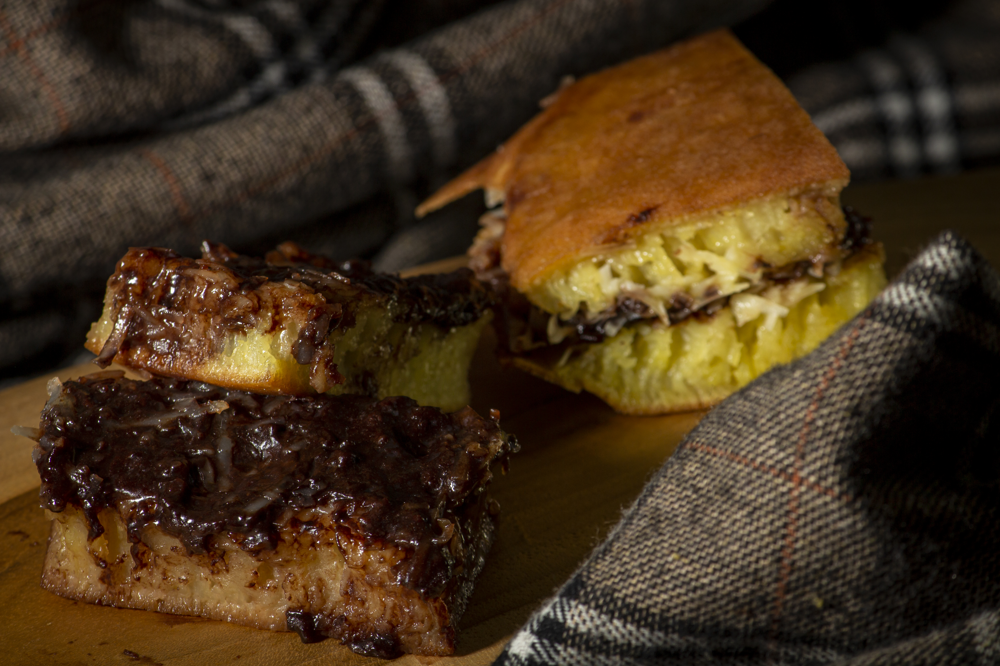

Resep Martabak Manis

Garis Besar
- Waktu Persiapan : 15 menit
- Waktu Istirahat : 1 jam (agar gluten terbentuk)
- Waktu Memasak : 15 menit
- Tingkat Kesulutan: Sedang
- Porsi : 1 loyang besar (diameter 20-22cm)
Bahan-Bahan
Bahan Adonan Utama:
- 170 gram tepung terigu protein sedang
- 3 sdm gula pasir
- 1/2 sdt telur ayam
- 1 butir telur ayam
- 230 ml air putih
Bahan Pengembang
- 1/2 sdt baking powder
- 1/2 sdt baking soda
- Secukupnya perisa vanila atau pasta pandan
- 1 sdm gula pasir
Bahan Topping
- Margarin atau Mentega
- Meises cokelat
- Keju cheddar parut
- Susu Kental Manis
Intruksi Memasak
- Membuat Adonan: Campurkan tepung terigu, gula pasir, garam, baking powder, telur, dan air ke dalam wadah. Aduk menggunakan balon whisk atau mixer selama minimal 10 menit hingga adonan benar-benar halus, elastis, dan tidak ada yang menggumpal.
- Mengistirahatkan Adonan: Tutup wadah dengan kain bersih atau plastik. Diamkan selama 1 jam agar bahan pengembang mulai aktif dan adonan menjadi rileks.
- Memasukkan Soda Kue: Setelah didiamkan, larutkan baking soda dengan sedikit air, lalu tuang ke dalam adonan. Aduk cepat hingga tercampur rata dan muncul buih-buih kecil di permukaan.
- Memanaskan Teflon: Panaskan teflon anti lengket dengan api sedang hingga benar-benar panas. Tes panasnya dengan memercikkan sedikit air; jika air langsung berdesis dan menguap, wajan sudah siap.
- Memanggang: Tuang adonan ke teflon. Goyangkan teflon secara memutar untuk membentuk pinggiran yang renyah. Masak dengan api sedang cenderung kecil tanpa ditutup hingga muncul banyak gelembung dan lubang (sarang) di permukaan.
- Menabur Gula: Ketika sarang sudah terbentuk sekitar 80%, taburkan 1 sdm gula pasir secara merata di atasnya. Tutup teflon dan kecilkan api ke tingkat paling minimal hingga permukaan martabak mengering dan matang sempurna.
- Penyajian: Angkat martabak. Selagi panas, segera olesi permukaannya dengan margarin secara royal agar teksturnya tetap empuk dan lembut. Potong menjadi dua bagian, beri isian meises, keju parut, dan kucuran susu kental manis. Lipat, olesi kembali kulit luarnya dengan margarin, lalu potong-potong sesuai selera.
Pro Tips Agar Bersarang Sempurna
- Pastikan Soda Kue Aktif: Kunci utama rongga/sarang yang cantik terletak pada soda kue. Jangan gunakan soda kue yang sudah lama terbuka karena kemampuannya menghasilkan gas sudah menurun.
- Pastikan Soda Kue Aktif: Kunci utama rongga/sarang yang cantik terletak pada soda kue. Jangan gunakan soda kue yang sudah lama terbuka karena kemampuannya menghasilkan gas sudah menurun.